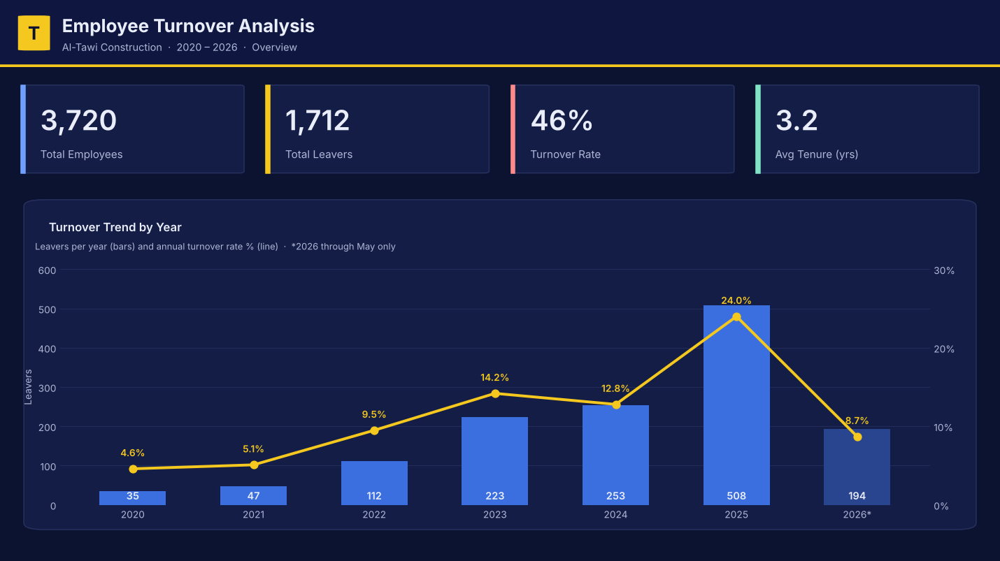
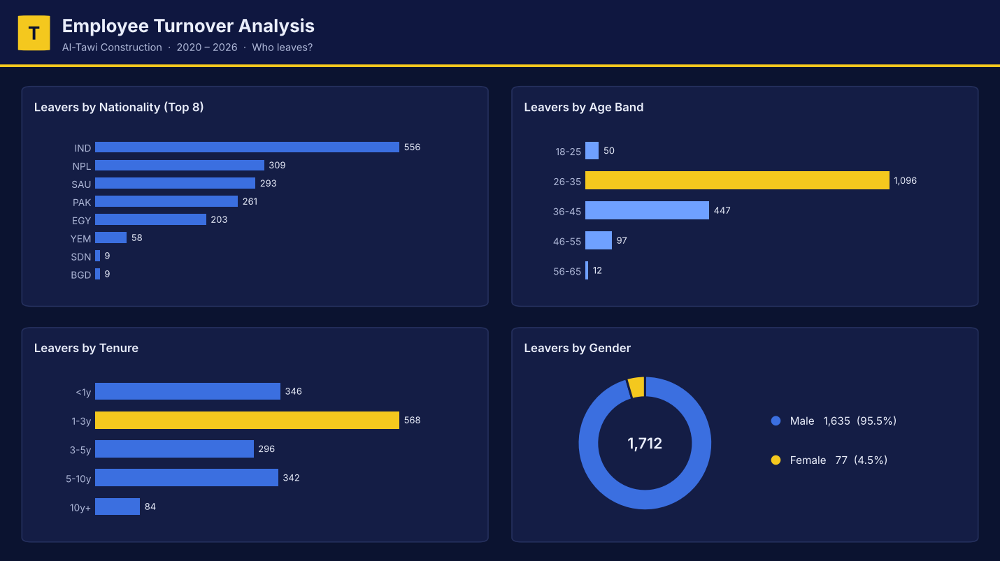

لوحة تحليلية لقياس الدوران الوظيفي في شركة آل طاوي للتشييد والبناء، مبنية على بيانات أكثر من 3,700 موظف بين 2020 و2026. تكشف اللوحة اتجاهات المغادرة عبر السنوات، والفئات الأكثر تأثرًا (العمر، مدة الخدمة، الجنسية، الجنس)، لدعم قرارات الاحتفاظ بالكفاءات. جميع الأرقام المعروضة هنا مجمّعة، دون أي بيانات فردية للموظفين حفاظًا على الخصوصية.


البيانات الأولية كانت غير نظيفة، فنظفتها بـ Pandas داخل Jupyter قبل بناء اللوحة.
مغادرو السنة ÷ متوسط عدد الموظفين، لكل سنة من 2020 إلى 2026.
حسب السنة، والجنسية، والجنس، والفئة العمرية، ومدة الخدمة.
بقياسات DAX مخصّصة.
صُحّحت المعادلة لتُحسب سنويًا (مغادرو السنة ÷ متوسط عدد الموظفين).
فُكّ الترميز إلى ذكر/أنثى بعد التحقق من النظام.
عولجوا بخوارزمية استنتاج قائمة على القواعد (Rule-Based Classification) تطابق الاسم الأول مع قوائم أسماء معرّفة.
أُعيد حساب العمر، وفُرّغت القيم الخاطئة بدل تشويه التحليل.
اعتُمد العمود الصحيح وحُذف المكرّر.
وُحّدت الحالة، واعتُمدت سنة المغادرة لتفادي مشكلة التقويم الهجري.
دوران متصاعد: ارتفعت النسبة السنوية من 4.6% عام 2020 إلى ذروتها 24% عام 2025 — أي نحو خمسة أضعاف خلال ست سنوات، قفزة تستدعي مراجعة سياسات الاستبقاء. (بيانات 2026 حتى مايو فقط، فلا تعكس السنة كاملة.)
الفئة الأكثر مغادرة: الفئة العمرية 26–35 هي الأعلى في عدد المغادرين، وهي غالبًا فئة الكفاءات في منتصف مسارها المهني.
مغادرة مبكرة: أكثر من نصف المغادرين تركوا خلال أول 3 سنوات، ما يشير إلى ضعف في مرحلة التأهيل والاندماج المبكر.
برامج تأهيل ومتابعة مركّزة في أول 3 سنوات، حيث يتركّز الجزء الأكبر من المغادرة.
دراسة أسباب مغادرة هذه الفئة (مسار وظيفي، تعويض، بيئة عمل) لأنها الأعلى دورانًا.
متابعة النسبة السنوية دوريًا بعد قفزة 2025، ورصد أثر أي إجراءات تصحيحية.
كلّما طالت مدة خدمة الموظف، انخفضت تكلفته النسبية وارتفعت إنتاجيته. وبما أن أكثر من نصف المغادرين يتركون خلال أول ثلاث سنوات، فإن الشركة تتحمّل تكاليف التأهيل دون أن تجني ثمار استثمارها في الموظف — ما يجعل الاحتفاظ بالكفاءات القرار الأقل تكلفة والأعلى عائدًا.
تُعرض هذه الأرقام كمرجع عام من أبحاث الموارد البشرية العالمية، ولا تمثّل احتسابًا فعليًا لتكلفة الدوران داخل الشركة.
بيانات مجمّعة لأغراض العرض · آل طاوي للتشييد والبناء.